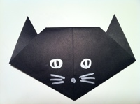

click these below pictures to know and learn how to make origami
This easy origami cat is really easy! Kids can have lots of fun folding the cat and drawing in its face. Simply follow the instructions and pictures to make your very own.
Origami birds with wings are usually more complex than this, but this bird is very easy to fold. It only takes a few simple steps and the result is almost as awesome as the more complex ones. This bird can also pass for a pigeon or dove.

Learn how to fold an easy origami elephant with very simple step by step photos and instructions. It's so easy that even very young kids can make one.
This tulip requires two pieces of paper. One for the stem and one for the flower itself. It's simple and very easy to make. After folding this one, you can try another origami tulip that is a little more difficult to make, but looks very nice.